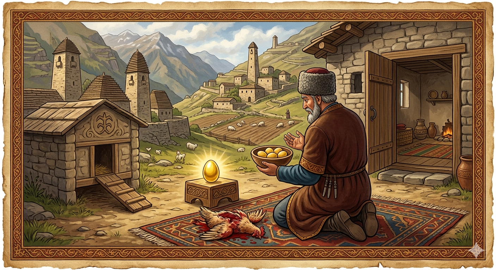

И.А. Дахкильгов. Хьехаме дувцарш - поучительные рассказы-притчи.
И.А. Дахкильгов. Хьехаме дувцарш - поучительные рассказы-притчи. Из ингушского фольклора.

Дошо фуаш ду котам
Цхьан даь хиннай тамашийна котам. Тамаш фуй, аьлча, хӀара денна цхьацца дошо фуъ деш хиннад цо. Цудухьа из къонах хиннав боккхача боахама да. Оалаш ма дий "саг вӀаьхегӀа мел хул цӀаьрматагӀа хул" аьле. Из къонах дукха хьаькъал долаш хиннавац. Цкъа дагадехад цунна: "Фуд ер укх котамо леладер? БӀарччача ден цхьа фуъ мара мича ду укхо!" ЛаьрхӀад цу къонахчо котама керчу мел дола фуъ дӀаэца. Урс хьекхад цо котама. Цун кер чура цхьа пхи-ялх кагий фуъ ийцад цо. Цу ханара денна къийлуш, къийлуш дӀавахар из къонах. Харца алац наха "Дукха дезаро кӀезига дезийтад".
РУССКИЙ
Курица, несущая золотые яйца
Некий мужчина имел чудесную курицу: она ежедневно приносила по одному золотому яичку. Понятно, ее хозяин был домовит и жил зажиточно. В народе говорят: "Чем богаче человек, тем он жаднее". Хозяин курицы умом не отличался. Как-то он прикинул: "Что за блажь у моей курицы носить в день всего-навсего одно яичко?". Зарезал он курицу. Достал из нее каких-то пять-шесть мелких яичек. С того дня хозяйство мужчины пришло в упадок, а вскоре он совсем обеднел. Не зря люди говорят: "Стремление сразу иметь много в итоге заставляет человека довольствоваться малым".
ENGLISH
The hen that lays golden eggs
A certain man had a marvellous hen: every day she laid a single golden egg. Naturally, her owner was a wealthy man and lived in comfort. As the saying goes: 'The richer a man is, the greedier he becomes.' The hen's owner was not particularly clever. One day he thought to himself: 'What sort of whim is this, for my hen to lay just one egg a day?' So he slaughtered the hen. He managed to get about five or six small eggs out of her. From that day on, the man's household fell into decline, and before long he became completely destitute. It is not for nothing that people say: 'The desire to have a lot all at once ultimately forces a person to be content with little.'
НОХЧИЙН
ПОГОВОРКИ
Бер доацача сесагал фуъ ду котам тол. - Лучше несущаяся курица, чем бездетная жена.Гаргарча аьлан зурмал хозагӀа хийттай гаьнарча Ӏуна зурма. - Далекая трель пастушьей дудки милее трелей близкой княжеской зурны.ДӀадахарга хьежжа мара хьатӀа а дагӀац. - Сколько приобретешь зависит от того, сколько отдашь.Котамо а доккхал ду ше фуъ дича. - Даже курочка гордится, когда яичко снесет.Кхоана хургъя яхача котамал таханар цхьа фуъ тол. - Лучше одно яичко сегодня, чем курица, обещанная на завтра.Къайгашта топаш етташ хилац, кара гӀадж (кхера) хилча. - По воронам не стреляют, когда в руках имеется палка (камень).Рузкъа рузкъанга дода. - Богатство к богатству идет.Са техачун пхандар яьттӀаяц. - У терпеливого лопаточная кость не треснула.Таьлми доаккха котам дикагӀа я бер ца деча сесагал. - Наседка лучше бездетной жены.УстагӀан тӀера тха дукхаза лорг, цӀока цкъа мара яьккхац. - Овцу стричь можно много раз, но освежевать – лишь раз.Ши фуъ де енна котам яьттӀай. - Захотелось курочке зараз снести два яичка, да и лопнула.Юхедусар дукхагӀа хет. - Берущему кажется, что у дающего осталось еще много.